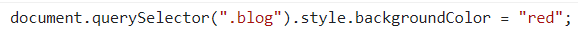
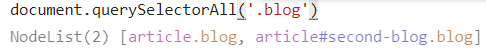
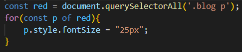
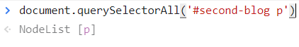
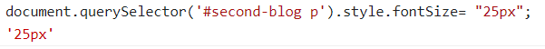

css querySelector
এটার সাহায্যে css এর id class tag যেকোনো কিছু দিয়ে সিলেক্ট করা যায় ।
এটার সাহায্যে css এর id class tag যেকোনো কিছু দিয়ে সিলেক্ট করা যায় ।
css querySelector ২ ভাবে ব্যেবহার করা যায় , querySelector এবং querySelectorAll
querySelector =  এই ক্ষেত্রে শুধু html প্রথম element কে নিয়েই কাজ করবে ।
querySelectorAll =  এই ক্ষেত্রে html এর সাব matching element কে পাওয়া যাবে
।
querySelectorAll এর ক্ষেত্রে সরসসরি style apply করা যায়না, তাই প্রত্যেকটা element কে loop এর সাহায্যে আলাদা আলাদা করে style দিতে হয় 
querySelector এর ক্ষেত্রে id ব্যেবহার করতে >>>#<<< আর class ব্যেবহার করতে >>>.<<< ব্যেবহার করতে হয় ।

